Parts and Materials Required
- Flat tip screwdriver
- Hex wrench, 2.5 mm
- Hex wrench, 3 mm
- Hex wrench, 4 mm
- Small piece of sandpaper or emery cloth
- MAGWASH, STATION 1 ASSY (LEFT)
or
- MAGWASH, STATION 2 ASSY (RIGHT)
Time Required
- 45 minutes
Removal Procedure

|
Note—DiTi Drawers may be loosened and moved forward (but not removed) to provide a little extra room. |
- Put on proper PPE.
|
|
WARNING—MTUs may be present in module. It is necessary to remove all MTUs to avoid contamination. |
- Clear MTUs using one of the following methods
- Reboot the Panther System main software.
Or
- Power down the Panther System.
- Remove the blue center divider.
- You can remove the front shield (optional).
- Place an absorbent pad in the system.
 Unplug the cables that connect the Magnetic Wash(es) to the COP.
Unplug the cables that connect the Magnetic Wash(es) to the COP.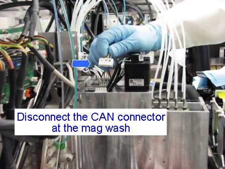
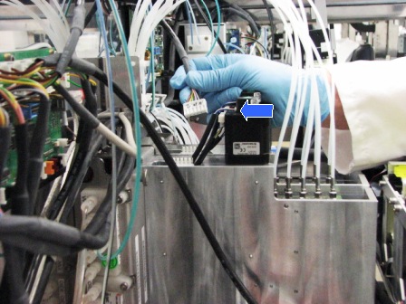
- Unplug the USB cable that connects to the COP (This will give you more room to remove the MagWash and prevent damage to the COP).
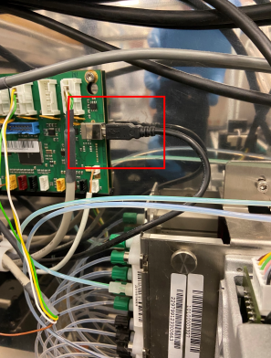
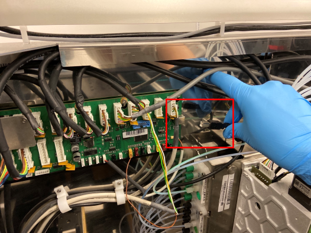
- Open the Mid-bay Drawer to gain additional access to the MagWash area.
- Disconnect the vacuum line tubes that connect the Vacuum Manifold to the Magnetic Wash station you wish to remove. If the line is stuck to the aspirator, twist to free it and pull straight up. A small piece of sandpaper or emery cloth may help to grip the line. If the tube is very tight, you may use needle nose pliers to remove the tube. However, use caution not to bend the tube.
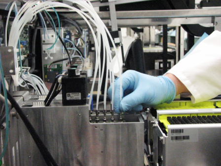
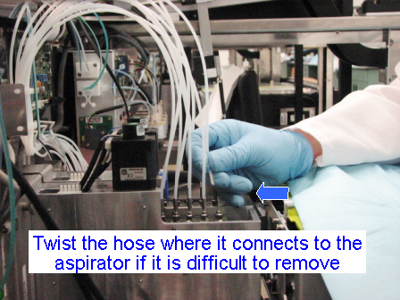
- Unscrew the green fluid line connecting the Wash Pump to the Magnetic Wash(es). If only one Magnetic Wash is to be removed, then the line can be disconnected safely without spilling wash solution.
Note—If both Magnetic Washes are to be removed, you must accommodate the wash solution that will drain out of the disconnected fluid lines. Place an absorbent pad under the valves to protest the system against leaking. 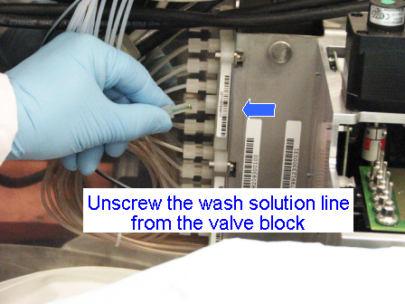
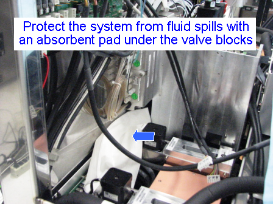
- Unscrew the oil line connecting the Oil Pump to the Magnetic Wash(es). If only one Magnetic Wash is to be removed, then the line can be disconnected safely without spilling oil.
Note—If both magnetic washes are to be removed, you must accommodate the oil that will drain out of the disconnected fluid lines. Place an absorbent pad under the valves to protect the system against leaking. 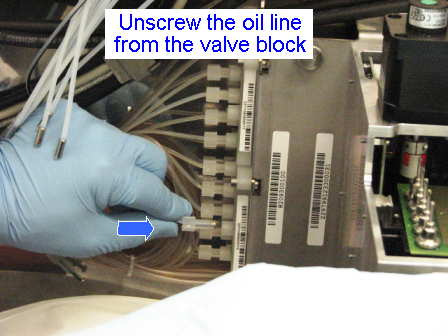
- Using the 4 mm hex wrench, loosen both screw(s) that hold the Magnetic Washers to the rear plate of the system.
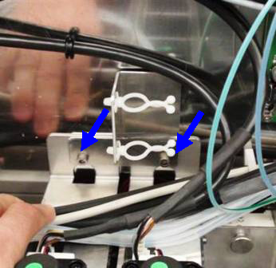
- Remove the sheet metal bracket that holds the cable ties.
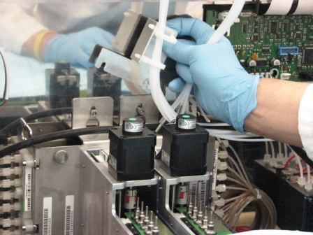
- The Magnetic Washes should now have no obstruction immediately above them preventing removal. Using both hands, lift the Magnetic Wash straight up and tilt it forward out of its mounting bracket. You may have to turn the Mag Wash in order for it to clear the Pipettor arm rail. You may have to move the vacuum tubes out of the way. Take extra care to be sure that the module does not damage the nearby pipettor arm PCB, especially when servicing Magnetic Wash 2.
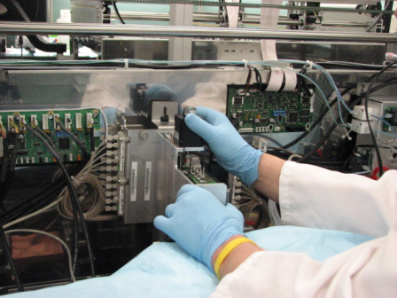
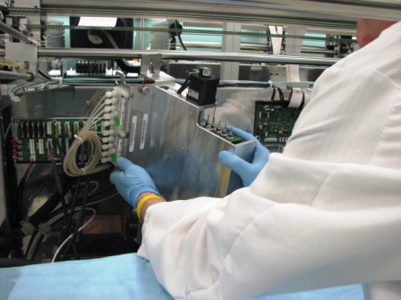
Note—If the module will be returned, clean the module.
Replacement Procedure
- Reverse the removal procedure.
- Ensure the front, lower mounting bracket is fully seated and aligned on the mounting stud that is attached to the system frame.
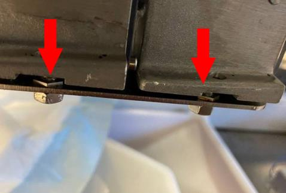
- Ensure the Mag Washer's top rear bracket is fully seated behind its mounting screws..
- Replace the sheet metal bracket and tighten the mounting screws.
- Double-check to be sure the cables that were removed are properly routed. Check to be sure the cables for the Motor Control board, Pipettor board, Liquid Cooling module, MagWash 1 & 2, and the USB cable to the COP have been re-connected.
- Check to be sure there are no cables or hoses interfering with the operation of other modules.
- If you installed a new module or new PCB, install Panther System firmware.
Alignment/Calibration
Verification
- Perform a system level Operational Qualification (at the MagWash only).
- Check for Oil and Wash fluid leaks at all connections.
- Prime Operation of pumping fluid through tubing to ensure proper and consistent fluid delivery (remove air from the tubing, etc.). the system (see the Panther System Operator's Manual).
 button at the top of the page to send feedback, comments, or change requests.
button at the top of the page to send feedback, comments, or change requests.